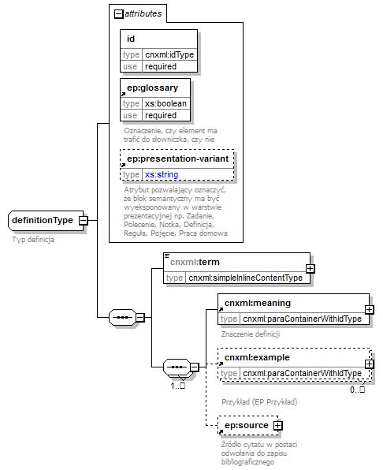
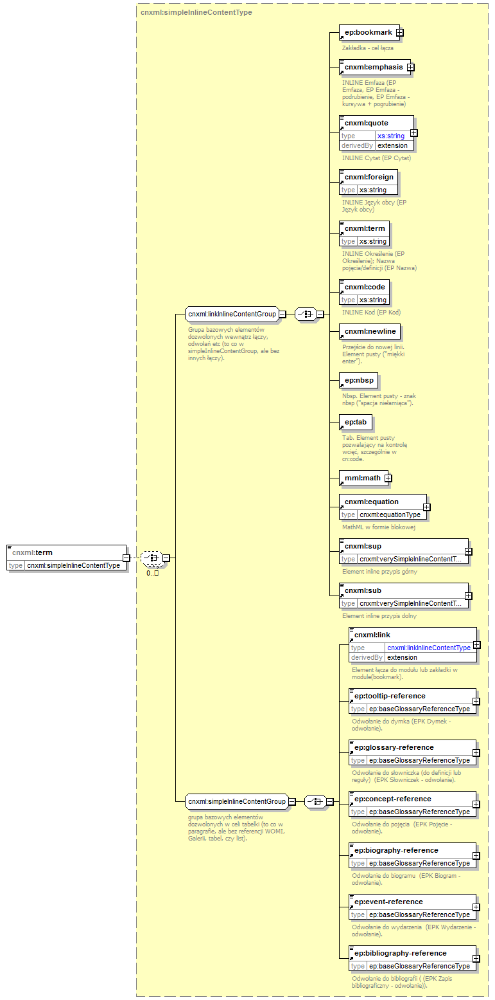

| diagram |  | ||||||||||||||||||||||||||||
| namespace | http://cnx.rice.edu/cnxml | ||||||||||||||||||||||||||||
| children | cnxml:term cnxml:meaning cnxml:example ep:source | ||||||||||||||||||||||||||||
| used by |
|
||||||||||||||||||||||||||||
| attributes |
|
||||||||||||||||||||||||||||
| annotation |
|
||||||||||||||||||||||||||||
| source | <xs:complexType name="definitionType"> <xs:annotation> <xs:documentation>Typ definicja</xs:documentation> </xs:annotation> <xs:sequence> <!--<xs:element name="term" type="cnxml:titleType"/>--> <xs:element name="term" type="cnxml:simpleInlineContentType"/> <xs:sequence maxOccurs="unbounded"> <xs:element ref="cnxml:meaning"/> <xs:element ref="cnxml:example" minOccurs="0" maxOccurs="unbounded"/> <xs:element ref="ep:source" minOccurs="0"/> </xs:sequence> </xs:sequence> <xs:attribute name="id" type="cnxml:idType" use="required"/> <xs:attribute ref="ep:glossary" use="required"/> <xs:attribute ref="ep:presentation-variant"/> </xs:complexType> |
| type | idType | |||||||||||||
| properties |
|
|||||||||||||
| facets |
|
|||||||||||||
| source | <xs:attribute name="id" type="cnxml:idType" use="required"/> |
| diagram |  | ||||
| namespace | http://cnx.rice.edu/cnxml | ||||
| type | cnxml:simpleInlineContentType | ||||
| properties |
|
||||
| children | ep:bookmark cnxml:emphasis cnxml:quote cnxml:foreign cnxml:term cnxml:code cnxml:newline ep:nbsp ep:tab m:math cnxml:equation cnxml:sup cnxml:sub cnxml:link ep:tooltip-reference ep:glossary-reference ep:concept-reference ep:biography-reference ep:event-reference ep:bibliography-reference | ||||
| used by |
|
||||
| source | <xs:element name="term" type="cnxml:simpleInlineContentType"/> |